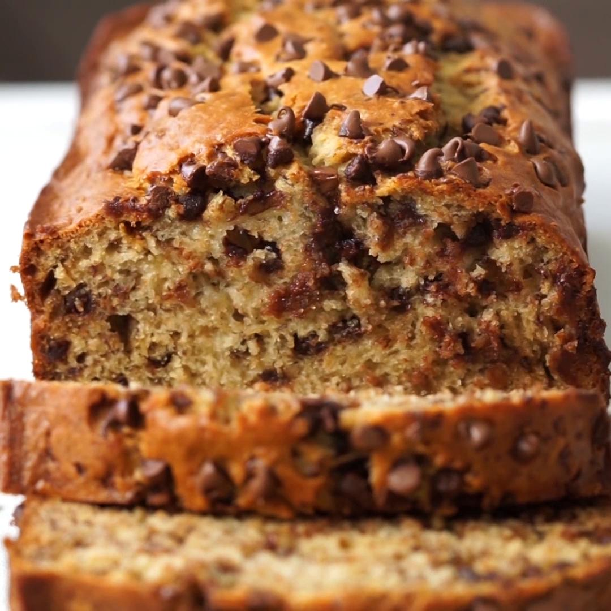

Banana Bread Recipe

This is my moms famous homemade banana bread recipe. It is great for when you have old bananas that you would normally throw away and can be customized by adding new ingredients like chocolate chips.
Ingredients:
- 2 Bananas
- 1 cup white sugar
- 2 eggs
- 1 cup melted butter
- 1/2 cup brown sugar
- 1 1/2 cup flour
- 1 tsp salt
- 1 tsp baking soda
- Melt and brown butter. Set aside to cool.
- Mix bananas, butter, sugar and eggs.
- Whisk together dry ingredients and add to wet.
- Add to preheated oven at 350oF for 50 min.
- Let rest for 30 min then serve.